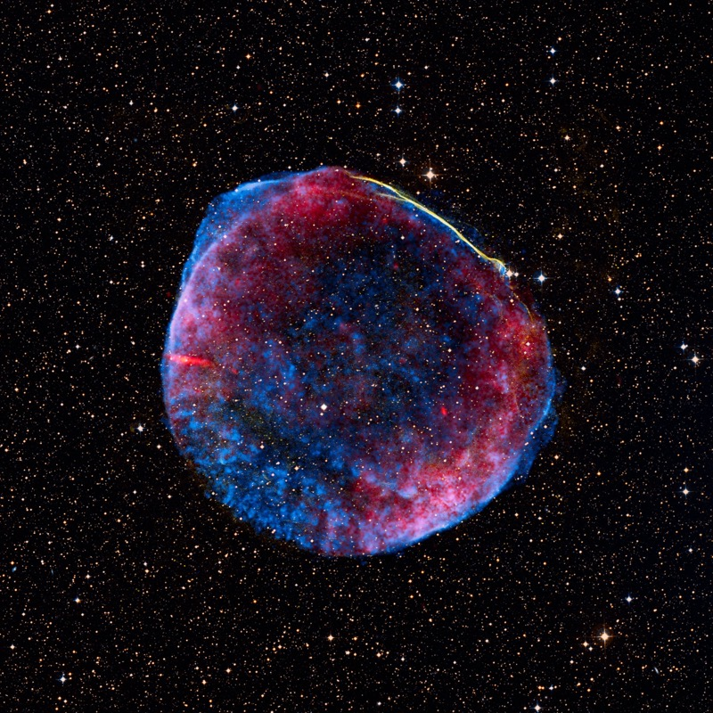

Stimpunks Foundation
Love You Down To Your Star Stuff
Love You Down to Your Star Stuff
LYSS (Love You, Star Stuff)
L★S
★stuff
You were ★stuff all along.

The Cosmos is within us. We are made of star-stuff. We are a way for the Universe to know itself — in every color, key, and frequency of neurodiversity.
The Shorthands
LYDTYSS is the full phrase — Love You Down To Your Star Stuff — and it carries everything. But it's a mouthful, and language that lives in community needs forms that fit in a text message, a sticker, a caption, a moment. These are the shorthands we use and what each one carries.
Which register you reach for depends on the moment. LYSS for tenderness. LUSS for solidarity with an edge. L★S when the visual matters. ★stuff when you're naming the thing itself. LYDTYSS when you need the whole phrase to do its full work.
The Inspirations
"The Cosmos is within us. We are made of star-stuff. We are a way for the Universe to know itself."
Carl SaganCarl Sagan – Cosmos: Stars – We Are Their Children (YouTube)
Carl Sagan: We are star stuff (YouTube)
We are star stuff. Harvesting starlight. Our lives, our past, and our future are tied to the sun, the moon, and the stars.
My physical body is your physical body, and just as the sun and stars are present in you, they are also present in me. You are not outside of me and I am not outside of you. You are more than just my environment. You are nothing less than myself.
…we are all made of stars
The amazing thing is that every atom in your body came from a star that exploded. And the atoms in your left hand probably came from a different star than your right hand. It really is the most poetic thing I know about physics: you are all stardust.
Lawrence Krauss
Lawrence Krauss: You Are All Stardust (YouTube)
The atoms of our bodies are traceable to stars that manufactured them in their cores and exploded these enriched ingredients across our galaxy, billions of years ago. For this reason, we are biologically connected to every other living thing in the world. We are chemically connected to all molecules on Earth. And we are atomically connected to all atoms in the universe. We are not figuratively, but literally stardust.
Neil deGrasse Tyson
Neil deGrasse Tyson: We're Literally Stardust from the Universe (YouTube)
There is stardust in your veins. We are literally, ultimately children of the stars.
Jocelyn Bell Burnell
We are stardust, we are golden.
Joni Mitchell, "Woodstock," 1969
There are many different ways of being human.
Carl Sagan: We are star stuffWe Are Star Stuff: Being Autistic, Ethodiversity and Cosmic Connection
Some phrases arrive as slogans. This one arrived as a realization.
The science has been settled for decades: we are, literally, made of star stuff. The six elements essential to life are woven through the Milky Way. A survey of 150,000 stars confirmed that humans and the galaxy share around 97% of the same kinds of atoms. We are not like the cosmos. We are continuous with it.
For neurodivergent and disabled people — people who have spent their lives being told they are too much, not enough, wrong in some fundamental way — that continuity matters differently. The universe did not make one configuration of matter and call it correct. It made billions of years of variation, explosion, collapse, and emergence. Every element heavier than hydrogen was forged in violence and became something new. You are part of that lineage.
LYDTYSS begins here. Not as comfort, but as cosmological argument: the problem was never you.
The following reflection comes from Helen, Co-Creative Director at Stimpunks. Helen wrote it in direct response to first hearing the phrase "Love You Down To Your Star Stuff" — what it opened up, what it confirmed, what it made newly speakable about being Autistic and made of the same matter as everything else.
I find it genuinely awe-inspiring to know that the atoms that make up your body, the oxygen in your lungs, the calcium in your bones, the iron in your blood were forged inside stars that died before our planet even existed. Not metaphorically, we are actually, literally, made of stars!
A 2017 survey of 150,000 stars confirmed that humans and our galaxy share around 97% of the same kinds of atoms, and that the six elements essential to life — carbon, hydrogen, nitrogen, oxygen, phosphorus, and sulphur — are woven right through the Milky Way (Howell, 2017). We are a living part of the cosmos.
I have been thinking about this a lot, and what it may mean to us as Autistic people, and it is something that is evolving in conversations within the CASY Autistic Physics group and my recent collaborative work with Stimpunks. There is something about being made of stardust that resonates far deeper than a scientific fact for me.
As an Autistic person, I have always felt that the boundaries between myself and the world are more porous than I was told they should be. Everything feels entangled, I am deeply influenced by my environment in ways that go beyond what neuronormative frameworks tend to account for. Time, my past and present merge and move together; my pull towards moss and mushrooms, and my interest in water, are more than a 'like' or form of regulation or sensory relief, they feel like I am becoming more attuned to something deeper and more essential, something I can only describe as parts of my soul recognising what they actually belong to.
The elements in your body right now came into being through some of the most violent events in the universe. The iron in your blood, the calcium in your bones, the oxygen in every breath, were forged in the cores of massive stars and released in supernovae: entire stars compressing their whole lives into a single catastrophic release. In that rupture, what had been locked inside was scattered outward, making things possible that could never have existed before.
We Are Star Stuff: Being Autistic, Ethodiversity and Cosmic Connection | More Realms
Resonance
Helen ended with an image of rupture and release: entire stars compressing their whole lives into a single catastrophic event, scattering outward what had been locked inside, making things possible that could never have existed before. She was describing supernovae. She was also describing what it feels like to finally hear something that names you correctly.
That is what resonance is. Not agreement with an idea, but recognition at a level below argument. The cards below trace why "Love You Down To Your Star Stuff" produces that recognition — in neurodivergent people especially, in people who have felt alien their whole lives, in anyone who has been told that the way they move through the world is the problem.
L★S · Stimpunks Foundation · stimpunks.org/star-stuff
Belonging, Authenticity & Radical Inclusivity
LYDTYSS is not just a phrase about cosmology. It is a signal — one that tells you this is a place where you do not have to perform your humanity to receive love. Belonging, authenticity, and radical inclusivity are not additions to the star-stuff idea. They are what it means in practice.
Related Concepts
The star-stuff insight — that we are made of the same matter as everything else in the universe, that there is no hierarchy of configurations, that love can reach all the way down to the atomic substrate — is not new. It has arrived independently across cultures, traditions, and centuries, in different vocabularies and for different purposes. What follows is not a claim that these traditions say the same thing. It is an acknowledgment that LYDTYSS is in conversation with something very old.
Tat tvam asi — Advaita Vedanta
That thou art. One of the mahāvākyas — the great sayings — of the Upanishads. The teaching is that the self (atman) and the ground of all being (Brahman) are not separate. You are not a fragment of the universe looking at it from outside. You are it, expressing itself in this particular form.
Advaita Vedanta, the non-dual school of Hindu philosophy, holds that the infinite diversity of existence is rooted in a single reality — and that each thing, living or not, is a unique manifestation of that one reality. Unique and universal at the same time. No configuration is more real than another. No configuration is outside the whole.
The parallel with LYDTYSS: love that goes all the way down to your star stuff is love that reaches the level where you and the cosmos are not separate. It is not love despite your particularity. It is love through your particularity to the universal substrate you share with everything.
Esho funi — Buddhism
Two but not two. The Buddhist principle that life and its environment are inseparable — not identical, but not separate either. The self does not end at the skin. The environment is not something outside the self. At a primal level of existence, there is no boundary between what you are and what surrounds you.
This is not a metaphor in Buddhist teaching. It is a description of how existence actually works, obscured by the conventional perception of separation.
For neurodivergent people who have always experienced the world as porous — who feel the environment deeply, whose boundaries between self and surroundings are less defended than neurotypical frameworks expect — esho funi offers a framework in which that porousness is not a deficit. It is a more accurate perception of how things are.
Waḥdat al-wujūd — Sufism
Unity of Being. The teaching of the 13th century Sufi mystic Ibn Arabi: all existence is a single reality, and apparent multiplicity is the one reality appearing in different forms. The many are not separate from the One. They are the One, taking on particular shapes.
Rumi's reed flute — cut from the reed bed, crying for reunion — is one of the most enduring images of this tradition. The longing is not pathology. It is the memory of original unity. The feeling of being cut off, of not belonging, of having come from somewhere else — in this reading, that feeling is not wrong. It is the accurate perception of a genuine separation, and the longing for return is sacred.
For people who have spent their lives feeling alien, waḥdat al-wujūd offers a reframe: the alienation is real, but it points toward something, not away from it. You were not wrong to feel the distance. The distance is the distance from the reed bed. LYDTYSS is one way of saying: you were never actually cut off. The universe is still in you. You are still in it.
Interbeing — Thich Nhat Hanh
Thich Nhat Hanh's term for the insight that nothing exists independently — that everything contains everything else, that to look deeply into anything is to find the whole cosmos inside it. A flower contains the cloud that rained on it, the sun that warmed it, the soil that held it, the person who will one day look at it.
Interbeing is already present on this page in Thich Nhat Hanh's own words: "My physical body is your physical body... You are nothing less than myself." But the concept is worth naming directly: this is not sentiment. It is a systematic account of reality in which the boundaries between self and other, between one being and another, are real but not absolute — permeable at depth.
The star-stuff argument is interbeing stated in the language of astrophysics.
Brahmacharya and the Animacy of Matter — Indigenous Cosmologies
Many Indigenous traditions hold that humans are not made from the land, the sky, the stars — they are made of them, in an ongoing relational sense. Not past tense. Not metaphor. The elements do not stop being in relationship with their origins when they become part of a body.
Robin Wall Kimmerer, Potawatomi botanist and author of Braiding Sweetgrass, writes of the grammar of animacy — Indigenous languages that treat the living world not as it but as he, she, they. To name something animate is to acknowledge it as a being in relationship with you, not a resource or a backdrop. When that grammar is applied to the elements in your body, the star-stuff argument becomes something warmer and more mutual: the cosmos is not just what you are made of. It is who you are in relationship with.
Song of Myself — Walt Whitman
I am large, I contain multitudes.
Whitman was writing in a tradition shaped by the Upanishads, filtered through Emerson's transcendentalism, and expressed in the most expansive poetic voice American literature had produced. Song of Myself is a sustained argument that the self is not a fixed, bounded, singular thing — that it contains contradiction, plurality, the whole of humanity, the whole of nature.
For neurodivergent people who have been told their multiplicity is a disorder, their contradictions are dysfunction, their way of being too large for the rooms they're given — Whitman's embrace of largeness as the nature of the self, not a deviation from it, is kin to what LYDTYSS is doing. You do not need to resolve your contradictions to deserve love. You are large. You contain multitudes. You are ★stuff.
Transcendental Empiricism — Deleuze
Deleuze's transcendental empiricism holds that experience is not filtered through pre-given categories — not sorted and stabilised before it reaches us — but encountered directly, in its raw difference and intensity. Where Kant asked what makes experience possible, Deleuze asked what experience actually is before it gets normalised. The answer: difference, variation, becoming. Not objects with fixed identities, but forces in flux.
From this flows a constellation of concepts that Autistic thinkers have found genuinely resonant. The rhizome — as opposed to the root or the tree — is a model of connection with no fixed centre, no hierarchy, no single origin point. It spreads laterally, unexpectedly, making connections between heterogeneous things. The fold suggests that interiority is not sealed off from exteriority but continuous with it, always turning inside out, always folding deeper. The line of flight is a rupture in a fixed system — a movement that escapes the structures meant to contain it. Not destruction, but becoming something the structure couldn't predict.
Helen Edgar has spent years exploring why these concepts resonate so specifically with neurodivergent experience. Her work suggests that Deleuzean philosophy does not merely describe neurodivergent minds from the outside — it maps the territory from within. A monotropic person's attention does not move through a tree-like hierarchy of priorities; it spreads rhizomatically, following the pull of a particular interest tunnel through unexpected connections. The fold describes what Helen calls the infinite nature of the bodymind: always a deeper cavern, always more interior to explore. The line of flight is what neuroqueering actually does — a departure from neuronormative structure that is not a failure to conform, but an opening into something new.
The connection to LYDTYSS is structural, not decorative. Transcendental empiricism refuses the idea that there is one correct way to process the world. Difference is not a deviation from a norm — it is what exists, at every level of experience. The DSM assumes a tree: a single structure of typical development, from which some people branch incorrectly. Deleuze assumes a rhizome: no trunk, no correct branch, just the spread of actual experience in its heterogeneous reality. LYDTYSS makes the same move. The universe doesn't produce one kind of star, one kind of mind, one kind of knowing. It produces variation. You are one of the variations. You are loved all the way down to that level.
For neurodivergent people who have found the rhizome, the fold, and the line of flight before they found the language for them — who have always known their attention moves differently, their time feels differently, their interiors have more caverns than the map shows — Deleuze offers philosophical scaffolding for something already lived.
The fold is not only a philosophical concept here. It is also the physics of the body described in the Crystal Under Pressure section below — piezoelectric bone is literally folded crystalline matter that transduces exterior pressure into interior charge. The boundary between outside force and inside response is not a wall. It is a fold. Deleuze's bodymind and Yasuda's bone are the same argument in different vocabularies: the cosmos outside and the body inside are not separate things, but continuous, folded into each other.
See Helen Edgar's work at Autistic Realms — including her explorations of Deleuzean time, the neuroqueering potential of the fold, and the rhizome as a model of Autistic community and belonging.
Spinoza's Pantheism
Baruch Spinoza, 17th century philosopher, argued that God and nature are one and the same substance — that the finite things of the world are not separate from the whole but expressions of it, like modes or properties of a single infinite being. There is no hierarchy among modes. No configuration of the one substance is more legitimate than another.
Spinoza was excommunicated for this. The idea that existence itself is sacred — not a fallen material world separate from a spiritual one, but one continuous substance that is both — was dangerous then. It remains radical now, in any system that ranks human beings by the legitimacy of their minds and bodies.
LYDTYSS is, among other things, a Spinozist argument: there is one substance. You are made of it. That is enough.
A Note on This Constellation
These traditions differ from each other in profound ways — in their metaphysics, their ethics, their relationship to self and cosmos. This is not a claim that they are saying the same thing, or that LYDTYSS is a synthesis of them.
It is a recognition that the intuition underlying LYDTYSS — that at some deep level, the boundaries between self and universe are not absolute, that this has implications for how we treat each other, that no configuration of matter is outside the circle of what deserves love — is one that human beings have kept arriving at, across very different starting points, for a very long time.
That is not proof. But it is not nothing.
The Cosmos is within us.
The Cosmos is within us. We are made of star-stuff. We are a way for the Universe to know itself — in every color, key, and frequency of neurodiversity.
Humans Really Are Made of Stardust, and a New Study Proves It | Space
Cosmological / scientific grounding
- We are star-stuff. The Universe does not have one way of knowing. It has as many ways as there are minds.
- The universe does not make one kind of star. Why would it make one kind of mind?
- We are not disordered. We are the Universe running different experiments in knowing.
- Supernovae don't apologize for the mess. Neither should you.
- Every element heavier than hydrogen was made in violence and became something tender. That's you.
- The iron in your blood was forged in a dying star. You have been carrying ancient fire your whole life.
- Stars don't burn the same way. Some collapse. Some expand. Some pulse. All of them are stars.
- You are not a failed neurotypical. You are a different stellar event.
- The universe has been running this experiment for 13.8 billion years. Your neurology is not a bug in the latest patch. It is part of the original code.
- Matter doesn't have a preferred configuration. The universe keeps trying new ones. You are one of the new ones.
Reclamatory / punk
- ★stuff doesn't ask permission to take up space.
- ★stuff doesn't apologize for how it burns.
- They called it a disorder. The stars called it a frequency.
- You were never too much. You were just in the wrong atmosphere.
- 97% stardust. 100% done apologizing.
- We are ★stuff. We are not broken. We are ancient.
- The DSM is not a star chart.
- You have been burning since before the diagnosis.
- Weird is a word small systems use for things they can't contain.
- They built the room too small and called it your fault for not fitting.
- The Universe spent 13.8 billion years making you exactly this way. The problem was never you.
Tender / affirmation
- You are ★stuff that learned to feel loneliness. That is not a flaw. That is what happens when the cosmos gets specific.
- You are ★stuff that learned to feel everything.
- The universe made you exquisitely sensitive to it. That is not a disorder. That is intimacy.
- You are the way this particular corner of the cosmos has chosen to know itself. There is no wrong way to do that.
- Love you down to your star stuff — past the diagnosis, past the mask, past the years of being told you were too much or not enough. All the way down. LYSS.
- You don't have to earn the right to be made of stars. You already are.
- Some of us feel the universe more than others. That's not a problem to solve. That's a gift we were never taught to hold.
- Your nervous system is not broken. It is exquisitely tuned to things other people learned to stop noticing.
- Carl Sagan said we are a way for the Universe to know itself. He didn't say there was only one way to know. Monotropic knowing. Hyperconnected knowing. Body-based knowing. Nonspeaking knowing. The Universe is not diminished by our neurology. It is expressed by it.
- Your bones are electrical generators. Your brain is a different kind of frequency. LYSS.
- 97% ancient stellar explosion. 3% trying to survive a fluorescent-lit room.
- ★stuff, ★stuff burning bright, in monotropic flight.
Community / plural voice
- We are ★stuff — the ones who stim, the ones who script, the ones who go mute, the ones who feel everything at once.
- The stimmy ones, the quiet ones, the loud ones, the ones who didn't speak today, the ones who spoke too much — all ★stuff, all the way down.
- We are ancient. We are not new problems. We have always been here, in every society, every century, every configuration of the cosmos.
- L★S — because we are not separate from the universe. We are how it keeps experimenting.
- No two stars burn the same. No two minds should have to.
- The neurodivergent community is the universe becoming aware of its own variation. LYSS.
Short / sticker-ready
- ★stuff doesn't burn on command.
- You were forged, not broken.
- Ancient light. Different frequency. L★S.
- The cosmos doesn't pathologize its own turbulence.
- Born in a supernova. Still here. LYSS.
- Made of the same 97%. Loved for the other 3%.
- ★stuff: no wrong configuration.
- You are how the universe knows this.
Crystal Under Pressure
A prose poem drawing on Dr. Iwao Yasuda's discovery of the piezoelectric properties of bone, the cosmological origins of the elements in our bodies, and the neurodiversity reframe.
Our bones are not solid. They are piezoelectric crystals — the same principle as quartz watches, microphones, sonar — that generate measurable electricity every time we move. Dr. Iwao Yasuda discovered this in 1957. Our skeleton is not a coat hanger for our muscles. It is a chemical factory, an electrical generator, a living crystal lattice humming with charge.
And it is made of star stuff.
The phosphorus in those bones — 85% of your body's supply — was forged in a stellar core before Earth existed. The calcium. The magnesium. Scattered by supernovae, gathered by gravity, assembled over billions of years into something that can bend and generate light.
The body as fold. The crystal as transducer. Force from outside becomes charge from inside — which is also what Deleuze means by the fold: interiority is not sealed off from exteriority, but continuous with it, always turning inside out, always folding deeper. See Transcendental Empiricism — Deleuze in Related Concepts, and The Fold and the Crystal for the full exploration.
What LYDTYSS Is Not
Not: your differences are a gift. That puts the burden back on you to be useful enough to deserve love.
Not: everything happens for a reason. Your suffering does not need a purpose to be real, or to matter, or to stop.
Not: you are special. Star stuff is not rare. It is everything. The phrase is about continuity, not exceptionalism.
Not: love you despite your star stuff. The direction matters. Down to. All the way through. Not around.
Not: a substitute for structural change. Loving someone cosmologically does not fix inaccessible systems. LYDTYSS knows this. It lives in the register of belonging, not policy. It does not pretend the two are the same.
It is not inspiration porn. It does not say your suffering has a purpose, or that your neurology is a superpower, or that everything happens for a reason. It does not ask you to reframe your pain as a gift.
It is not toxic positivity. It does not say everything is fine. It does not paper over the real costs of living in systems that were not built for you.
It is not the "your differences are a gift" framework. That framing puts the burden back on the person — you must justify your existence by being useful, extraordinary, or instructive to neurotypicals. LYDTYSS asks nothing of you in return.
It is not conditional. It does not say "love you for your star stuff" — as though the cosmic material is the lovable part and the rest of you is on probation. It says love goes down to that level. The direction matters. It is not a ceiling. It is a floor.
It is not a metaphor for being special. Star stuff is not rare. It is everywhere. Every rock, every raindrop, every person who has ever made you feel like you were too much — also star stuff. The phrase is not about being chosen. It is about being continuous with everything that exists.
It is not a substitute for structural change. Loving someone down to their star stuff does not fix inaccessible systems, underfunded support, or the violence of forced normalization. The phrase lives in the register of love and community, not policy. It does not pretend otherwise.
What LYDTYSS Is
It is a cosmological argument stated as an act of love.
It says: the matter you are made of was forged in stellar cores before Earth existed, scattered by supernovae, gathered by gravity, assembled over billions of years into something that can feel joy and grief and overstimulation in a fluorescent-lit room. That process did not produce a hierarchy. It produced variation. You are one of the variations. You are loved all the way down to that level.
It is a belonging signal. When you hear it, it means: this is a place where you do not have to perform your humanity to receive care. The love is not conditional on your behavior, your productivity, your legibility, your diagnosis, or your ability to pass. It goes all the way down past all of that to the substrate. You are in.
It is a refusal. A refusal to accept that there is a correct configuration of human being. A refusal to locate the problem in the person rather than in the systems that were not built for them. A refusal to rank matter.
It is an affirmation that does not require you to be exceptional. You are not loved because your neurology is a superpower, or because your suffering has produced wisdom, or because you have overcome. You are loved because you exist. Because at the atomic level you are continuous with everything that has ever existed. That is the only qualification. It has never been in question.
It is a phrase that travels. LYDTYSS in full when you need the whole weight of it. LYSS when you mean it tenderly. LUSS when you mean it with an edge. L★S when the symbol is enough. ★stuff when you are just naming what you are. The phrase scales because the love it describes scales — from the cosmic to the personal, from the philosophical to the text message.
It is a community practice. Not just something said to individuals but something practiced collectively — in how Stimpunks builds spaces, funds access, holds people, refuses to make belonging conditional. LYDTYSS is the phrase. The practice is what happens when you take it seriously.
It is, finally, an invitation. To let love reach that far. To stop defending the parts of yourself you have learned to hide. To belong somewhere at the level of your matter, not the level of your performance.
Love you down to your star stuff. All the way down. LYSS.
Reflection
Ancient, Cosmic, Real
The star stuff framing positions us as ancient, cosmic, made of real matter.
Some prompts that fit that ethos:
- "You are made of exploded stars. What are you made of, emotionally, today?"
- "What in you feels elemental right now — fire, water, pressure, light?"
- "Name something you're carrying that's older than you."
- "What part of you is still forming?"
- "Where did you come from, and where are you going?"
Belonging
- When have you felt personally accepted — not tolerated, not accommodated, but genuinely welcomed as yourself? What made that different from other spaces?
- Have you ever belonged somewhere only by performing a version of yourself that wasn't quite real? What did that cost you?
- Belonging is described as wholeness — being at home in yourself and in community. Which of those feels harder right now?
- What would it mean to belong somewhere the way matter belongs to the universe — not earned, not conditional, just intrinsic?
- Who in your life has made you feel like you didn't have to explain yourself to be loved?
Authenticity
- What parts of yourself have you hidden or suppressed in order to survive a space? What would it feel like to stop?
- Authenticity is described as a precondition for psychological safety, not a luxury. Has there been a moment when you were allowed to be fully yourself and noticed the difference in how you could think, feel, or function?
- Masking is expensive. What cognitive and emotional bandwidth might become available to you if you didn't have to spend it on performing normalcy?
- What does your authentic self do, sound like, or need — that the world has most often asked you to hide?
- If love goes all the way down past performance to your atomic substrate — what would you stop apologizing for?
Radical Inclusivity
- Radical inclusivity confronts normativity directly — it doesn't just tolerate difference, it dismantles the systems that treat difference as a problem. What norm have you been asked to conform to that you now recognize as arbitrary?
- Inclusion safety is described as acceptance based on the sole qualification of having flesh and blood. Have you ever been in a space that actually felt that way? What made it possible?
- The argument here is cosmological: no configuration of star stuff is outside the circle. Does that framing shift anything for you about who deserves care and belonging?
- Where in your life are you still waiting for permission to exist fully? What is the source of that permission, and is it legitimate?
- What would it look like to build a space — in your home, your classroom, your community — where no one has to mask to survive?
Across all three
- LYDTYSS says love reaches all the way down to your star stuff. What is the deepest, most hidden version of yourself that you have not yet let be loved?
- If belonging, authenticity, and radical inclusivity are not additions to the star-stuff idea but what it means in practice — what does that ask of you as someone who receives that love? What does it ask of you as someone who gives it?
Community Voices
This section is growing. We want to hear from you.
LYDTYSS started as a phrase and became a community practice. What does "Love You Down To Your Star Stuff" mean to you? When did you first hear it, or first feel it? What did it open up, confirm, or make newly speakable?
We are collecting short reflections — a sentence, a paragraph, whatever fits — from neurodivergent and disabled community members, allies, educators, and anyone the phrase has reached.
To contribute, contact us.
L★S Playlist
Songs in conversation with Love You Down To Your Star Stuff — cosmic, reclamatory, tender, and true.
This page rests here.
You made it to the bottom.
We love you for it.
Thanks for falling down this rabbit hole with us.
Love You Down to Your Star Stuff
LYSS (Love You, Star Stuff)
L★S
★stuff
You were ★stuff all along.
![A cosmic illustration in the style of Van Gogh's The Starry Night, rendered in deep black, swirling cornflower blues, and golden yellow. A large spiral coils inward to a smiling five-pointed star at the center, its surface textured with radiating gold lines, concentric circles, and dense spiral patterns. Smaller curling spirals branch off across the composition. Scattered throughout the star-flecked night sky are cheerful cartoon suns with smiling faces. Signed "Rainbow Mosho" in purple script in the lower right corner.](where-we-come-from-rainbow-mosho.jpg)
As seen in the MoonMars Museum